IGIL Admin Dashboard User Guide
Version: 1.0
Audience: Admin users
Applies to: `app/admin`
1) What this dashboard is for
The Admin Dashboard helps you manage:
- Students and their profiles
- Enrollments and approvals
- Programs and program sessions
- Certificates and download unlocks
- Gallery images
- Your admin account settings
Use the left sidebar to move between sections:
- Dashboard
- Students
- Enrollments
- Programs
- Sessions
- Certificates
- Gallery Management
- Settings
2) Dashboard overview
Path: `/admin/dashboard`
The dashboard shows quick stats:
- Gallery Images: total image count
- Recent Activity: images added in the last 24 hours
- Storage Used: total gallery storage
Use this page as your quick health check before deeper actions.
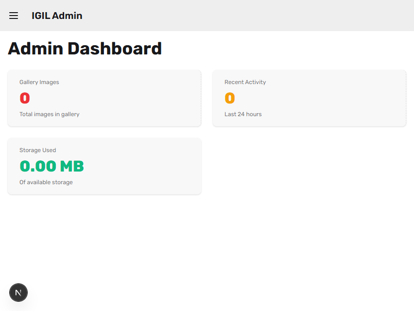
3) Students
Path: `/admin/students`
What you can do
- Create a student manually
- Search students by name/email
- Filter by program
- Filter by profile approval status
- Open a student's profile page
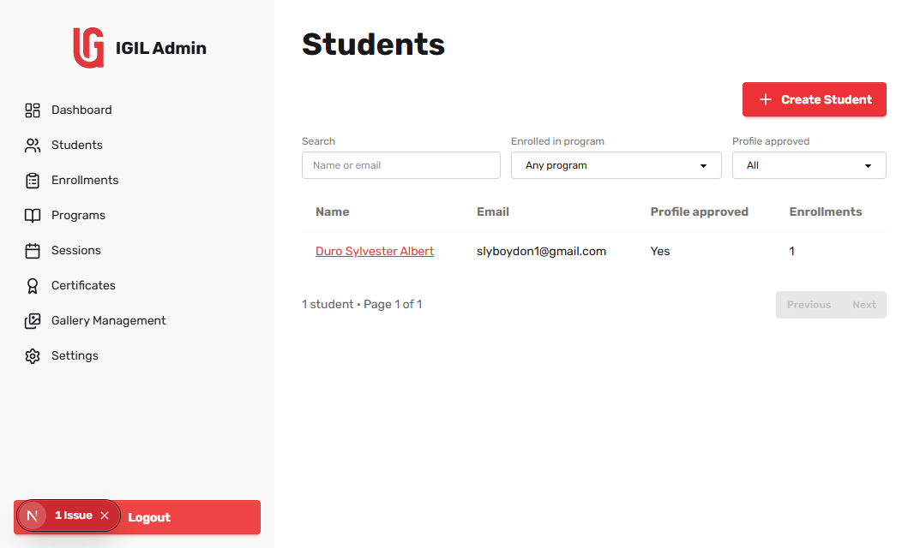
Create a student
- Click Create Student.
- Fill in:
- Name
- Email
- Temporary password (minimum 8 characters)
- Optional:
- Assign to a program
- Enter program name for invite email
- Keep Send invitation email checked if needed
- Click Create.
Expected result: the student appears in the list and can be opened from name/email.
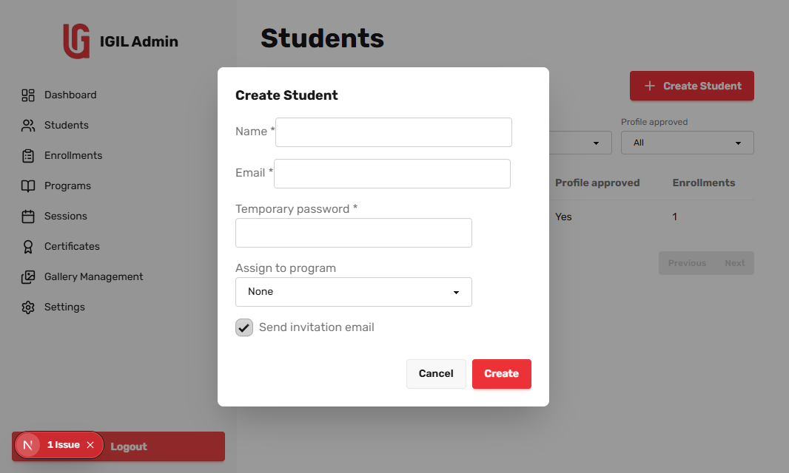
Student profile page
Path: `/admin/students/{id}`
Use this page to review student details and enrollment status summary.
4) Enrollments
List path: `/admin/enrollments`
Detail path: `/admin/enrollments/{id}`
What you can do from the list
- Filter by Program
- Filter by Program session
- Filter by Source (`invited` or `self`)
- Search student by name/email
- Open Details for any enrollment
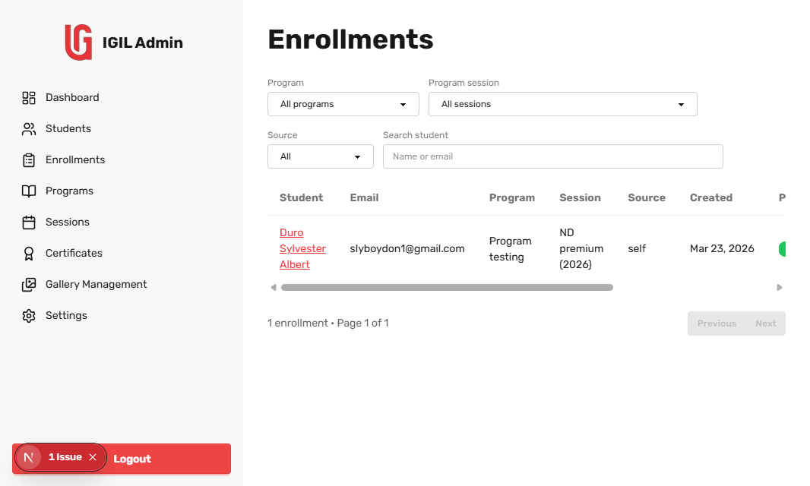
Enrollment detail workflow (most important)
On the detail page, process enrollments in this order:
- Confirm Student and Program.
- Set Program approved if requirements are met.
- Set Payment approved after payment verification.
- Assign a Session (required before completion).
- Check Mark enrollment complete.
Expected result: enrollment status reaches completed state.
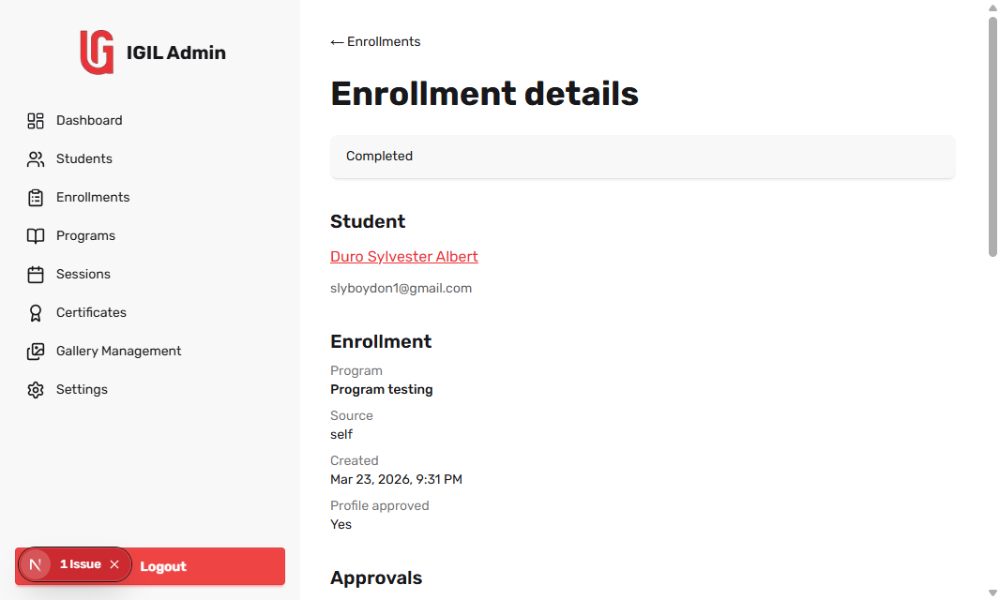
Certificate actions from enrollment detail
After completion, a Certificate section appears.
You can:
- Upload certificate file (PDF/image)
- Set certificate number
- Set issued date
- Save certificate details
5) Programs
List path: `/admin/programs`
Create path: `/admin/programs/new`
Edit path: `/admin/programs/{id}/edit`
What you can do
- Create a new program
- Edit program details
- Delete a program
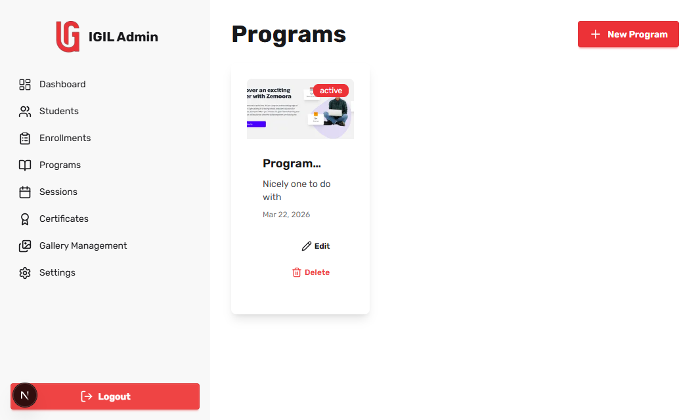
Create or edit a program
Fill:
- Title (required)
- Description (required)
- Cover image (optional upload)
- Payment instruction (optional)
- Status (`draft` or `active`)
Click Create or Update to save.
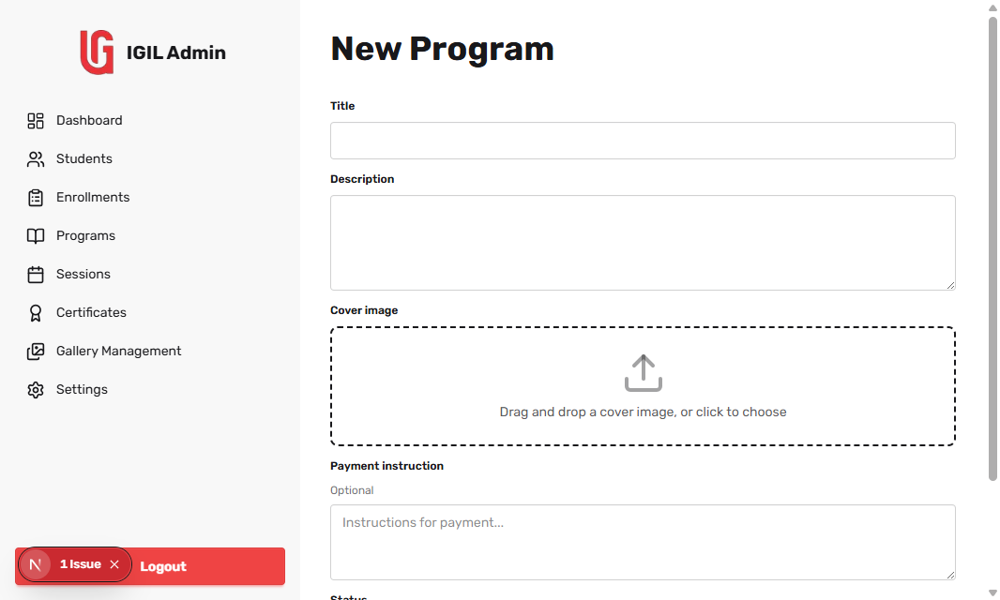
Delete a program
- Click Delete on a program card.
- Confirm deletion in the prompt.
Use caution: deleting affects program availability and related operations.
6) Sessions
List path: `/admin/sessions`
Manage students path: `/admin/sessions/{id}`
Create a session
- Click New Session.
- Select Program.
- Set Year and Title.
- Click Create.
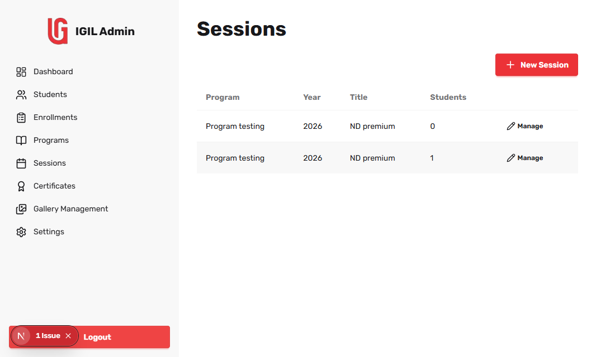
Manage session students
- Click Manage on a session row.
- On the session page:
- Search by name or user ID
- Filter by Program approved
- Filter by In this session
- Check/uncheck In session per student.
- Click Save changes.
Expected result: session membership updates and session student count refreshes.
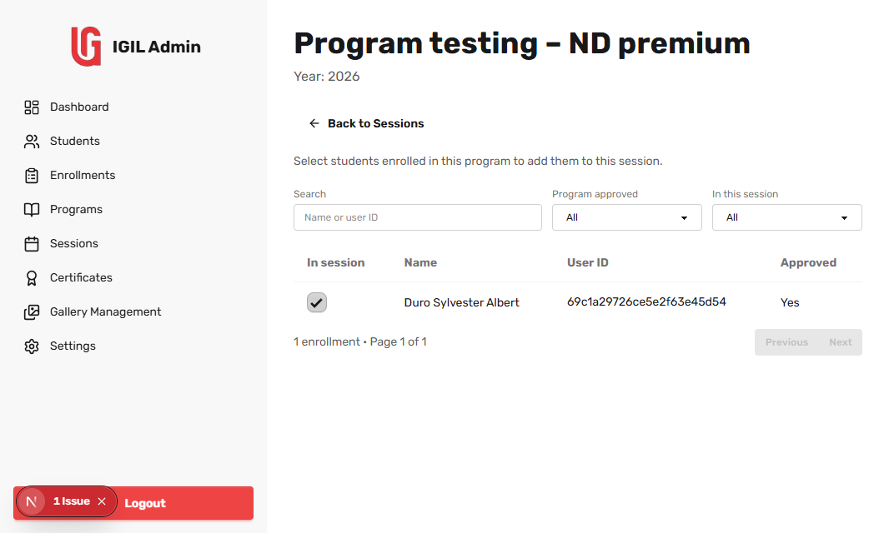
7) Certificates
Path: `/admin/certificates`
What you can do
- View certificate records by user/program/session
- Review certificate number and file link
- See student download count
- See unlock expiry
- Unlock student downloads for 24 hours
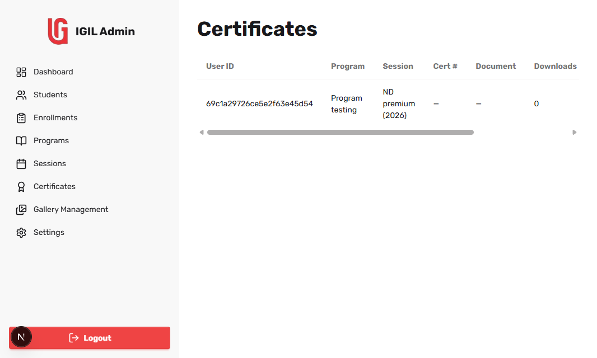
Unlock workflow
- Locate the certificate row.
- Click Unlock 24h.
Expected result: unlock end time updates and student can download during the unlock period.
8) Gallery Management
Path: `/admin/gallery`
What you can do
- Upload new images
- Edit image metadata
- Delete images
- Browse with pagination
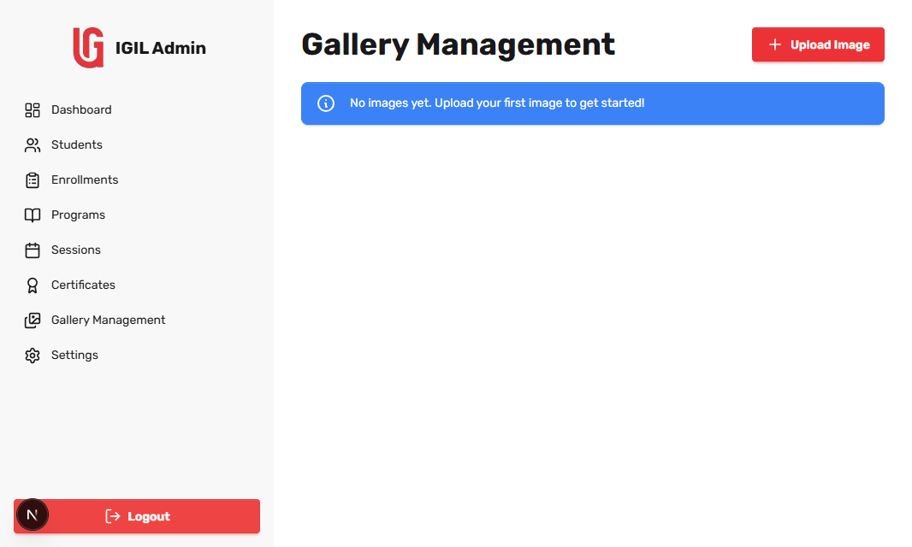
Recommended flow
- Upload image from Upload action.
- Verify title/description and thumbnail.
- Use edit action to fix metadata.
- Use delete only when content is obsolete.
9) Settings
Path: `/admin/settings`
Change email
- Enter current email.
- Enter new email and confirmation.
- Click Change Email.
Change password
- Enter current password.
- Enter new password and confirmation (minimum 8 characters).
- Click Change Password.
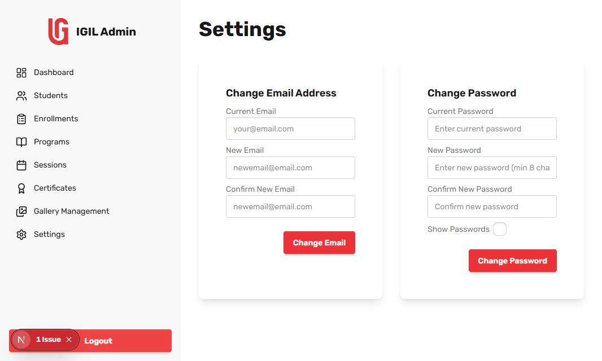
10) Common messages and what they mean
- No students/enrollments/sessions yet: no data for current state; create records first.
- No records match current filters: clear some filters or search terms.
- Program and title are required: missing required session fields.
- Assign a session before marking complete: set session first in enrollment detail.
11) Best-practice checklist
- Approve in sequence: profile -> program -> payment -> completion.
- Always assign session before marking completion.
- Keep program titles and session titles clear and consistent.
- Add certificate number and issue date immediately after upload.
- Use filters before editing to avoid modifying the wrong record.
12) Screenshot index
Store screenshots under: `docs/admin-guide/screenshots/`
Planned files:
- `01-dashboard.png`
- `02-students-list.png`
- `03-create-student-modal.png`
- `04-enrollments-list.png`
- `05-enrollment-detail-approvals.png`
- `06-programs-cards.png`
- `07-program-form.png`
- `08-sessions-list.png`
- `09-session-students-manage.png`
- `10-certificates-table.png`
- `11-gallery-management.png`
- `12-settings-forms.png`